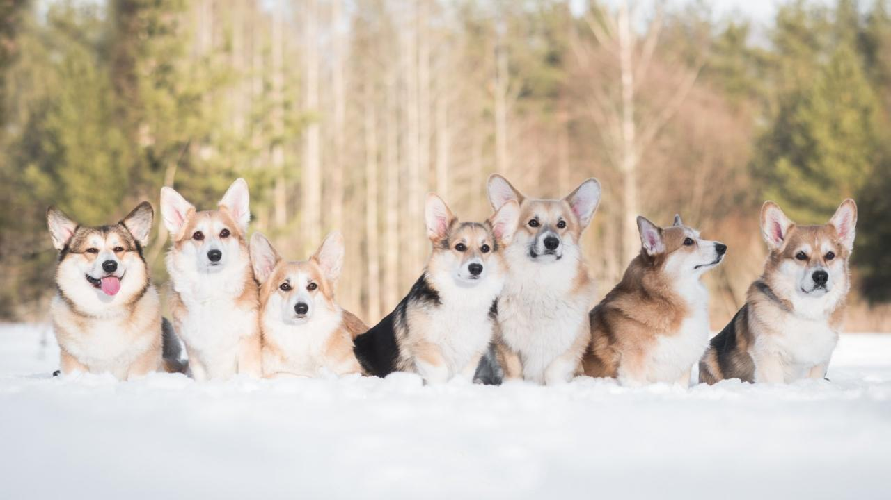

ДОБРО ПОЖАЛОВАТЬ В ПИТОМНИК QS
9 ПРИЧИН ЗАВЕСТИ КОРГИ
Размер
Вельш корги пемброк и вельш корги кардиган — собаки небольшие. Всего 30 см высотой в холке. Они не займут много места даже в скромной квартире.
Характер
Породный признак вельш корги — дружелюбие. Есть собаки, которые по своей породе должны быть настороженными, или флегматичными. Характер классического корги — уравновешенный, доброжелательный, не агрессивный и не трусливый.
Отношение к людям
Вельш корги — собаки пастушьи. Многие корги воспринимают семью, в которой живут, как свою паству, свое «стадо», которое надо «пасти» и оберегать. Дети для «коржиков» — это объект для нежности, любви и заботы.
Шерсть
Вельш корги не требуют большой возни с шерстью. Их не нужно стричь, они не требует тримминга. Корги не мерзнут зимой, им не нужна «одежда». Всё, что потребуется для ухода за шерстью — расческа.
Прогулки
Вельш корги хоть и небольшие, но активные собаки. С ними не нужно бегать по 5 км в день, но они очень радуются активным играм на свежем воздухе. Прогулки коржикам нужны, иначе они, как любители поесть, быстро могут превратиться в собаку-тумбочку.
Обучаемость
Корги — очень разумные и быстро обучаемые собаки. Дрессировщики разных стран не раз отмечали их сообразительность. Корги достаточно 2-4 раза повторить команду и он поймет, что вы от него хотите.
Возраст
Корги замечательно подойдут и молодым людям, которые хотят завести модную собачку. И пожилым людям, которые хотят иметь преданного и веселого друга. Корги — идеальная порода для семьи с детьми.
Шкодливость
Вельш корги, в отличие, например, от большинства собак охотничьих пород, довольно равнодушно относятся к интерьеру и не пытаются его «поправить» на свой лад. Если щенку вельш корги дать на откуп резиновые или веревочные игрушки, прессованную кожу — в общем все игрушки-жевалки, которые продаются в зоомагазинах, вряд ли он разнесет в пух и прах весь дом.
Навязчивость
Корги — английская порода. И как каждый англичанин, коржик знает, что такое умеренность. Он ласковый, но если видит, что вы заняты — он будет ждать, когда вы сможете уделить ему внимание.